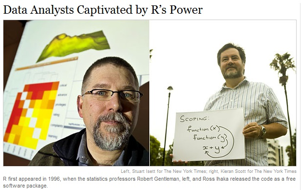
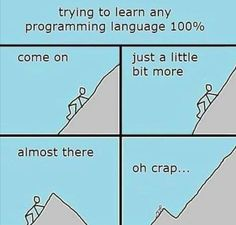

2 Getting started in R
Before we can start exploring data in R, there are some key concepts to understand first:
- What are R and RStudio?
- How do I code in R?
- What are R packages?
Much of this chapter is based on two sources, which you should feel free to use as references, if you are looking for additional details:
- Ismay’s Getting used to R, RStudio, and R Markdown (Ismay 2016), which includes video screen recordings that you can follow along and pause as you learn.
- DataCamp’s online tutorials. DataCamp is a browser-based interactive platform for learning data science and their tutorials will help facilitate your learning of the above concepts (and other topics in this book). Go to DataCamp and create an account before continuing.
2.1 Some history
R is a dialect of the S language (developed by John Chambers at Bell Labs in the 70s), namely ‘Gnu-S’. R was written by Robert Gentleman and Ross Ihaka (while being at the University of Auckland) in 1993.

The (Kleiber and Zeileis 2008) book sketches the history of R, in Sections 1.5 and 1.6. The R source code was first released under the GNU General Public License (GPL) in 1995. Since mid-1997, there has been the R Development Core Team, currently comprising 20 members. In 1998, the Comprehensive R Archive Network CRAN was established, a family of mirror sites around the world that store identical, up-to-date versions of code and documentation for R. The first official release, R version 1.0.0, dates to 2000-02-29. Currently, version 4.0.3 is available.
R is open source, i.e. GNU General Public License. The R environment (see About R) is ‘an integrated suite of software facilities for data manipulation, calculation and graphical display’.
2.2 What are R and RStudio?
Throughout this book, we will assume that you are using R via RStudio. First time users often confuse the two. At its simplest:
- R is like a car’s engine
- RStudio is like a car’s dashboard
| R: Engine | RStudio: Dashboard |
|---|---|
 |
 |
More precisely, R is a programming language that runs computations while RStudio is an integrated development environment (IDE) that provides an interface by adding many convenient features and tools. In the same way that a speedometer, rear view mirrors, and a navigation system makes driving much easier, using RStudio’s interface makes using R much easier as well.
Optional: For a more in-depth discussion on the difference between R and RStudio IDE, watch this DataCamp video (2m52s).
2.2.1 Installing R and RStudio
You will first need to download and install both R and RStudio (Desktop version) on your computer.
- Note: You must do this first.
- Click on the download link corresponding to your computer’s operating system.
- Scroll down to “Installers for Supported Platforms”
- Click on the download link corresponding to your computer’s operating system.
Optional: If you need more detailed instructions on how to install R and RStudio, watch this DataCamp video (1m22s).
2.2.2 Using R via RStudio
Recall our car analogy from above. Just as we don’t drive a car by interacting directly with the engine, but rather by using elements on the car’s dashboard, we won’t be using R directly. Instead we will use RStudio’s interface. After you install R and RStudio on your computer, you’ll have two new programs AKA applications you can open. We will always work in RStudio and not R. In other words:
| R: Do not open this | RStudio: Open this |
|---|---|
 |
Do remember though, that (heavier) R-scripts run faster in R compared to RStudio. So, when you are familiar enough with the basics and are brave enough to be a mechanic, you can always use RGui which is the standard graphical user interface (GUI) for R. For now, however, we will use Rstudio only as it makes driving our car/running our analyses a whole lot easier. In addition, it also helps you to get familiar with some of the basic R concepts.
After you open RStudio, you should see the following:

Watch the following DataCamp video (4m10s) to learn about the different panes in RStudio, in particular the Console pane where you will later run R code.
2.3 How do I code in R?
Now that you’re set up with R and RStudio, you are probably asking yourself “OK. Now how do I use R?” The first thing to note as that unlike other software like Excel, STATA, or SAS that provide point and click interfaces, R is an interpreted language, meaning you have to enter in R commands written in R code i.e. you have to program in R (we use the terms “coding” and “programming” interchangeably in this book).
While it is not required to be a seasoned coder/computer programmer to use R, there is still a set of basic programming concepts that R users need to understand. Consequently, while this book is not a book on programming, you will still learn just enough of these basic programming concepts needed to explore and analyze data effectively.
2.3.1 Tips on learning to code
Learning to code/program is very much like learning a foreign language, it can be very daunting and frustrating at first. However just as with learning a foreign language, if you put in the effort and are not afraid to make mistakes, anybody can learn. Before you know it, you will have fun learning more about it and be eager to learn even more. Something that also helps, is that most programmers have a good sense of humor. Just Google ‘package R beepr’ or go to http://www.sumsar.net/blog/2014/01/announcing-pingr/ and go see for yourself. Or just run the following code (no need to know what it does right now):
if(!"beepr" %in% rownames(installed.packages()))
install.packages("beepr")
for(i in 1:10) {
Sys.sleep(1)
beepr::beep(i)
}So, whoever said learning can’t be fun, obviously hasn’t met programmers yet.

Lastly, there are a few useful things to keep in mind as you learn to program:
- Computers are stupid: You have to tell a computer everything it needs to do. Furthermore, your instructions can’t have any mistakes in them, nor can they be ambiguous in any way. We, for example, know that we both mean the same thing when typing
lengthandlenght. The computer, however, doesn’t. - Take the “copy/paste/tweak” approach: Especially when learning your first programming language, it is often much easier to taking existing code that you know works and modify it to suit your ends, rather than trying to write new code from scratch. We call this the copy/paste/tweak approach. So early on, we suggest not trying to code from scratch, but please take the code we provide throughout this book and play around with it!
- Practice is key: Just as the only solution to improving your foreign language skills is practice, so also the only way to get better at R is through practice. Don’t worry however, we’ll give you plenty of opportunities to practice! In addition, don’t forget to have fun while learning. This will make learning a whole lot easier and enable you to learn things quicker and faster. Just think back of all the boring and interesting, fun courses you had or just random things you learned. Which one do you still remember? It’s the boring course, right?
2.4 What are R packages?
Another point of confusion with new R users is the notion of a package. R packages extend the functionality of R by providing additional functions, data, documentation and can be downloaded for free from the internet. They are written by a world-wide community of R users. For example, among the many packages we will use in this book are the
There are two key things to remember about R packages:
- Installation: Most packages are not installed by default when you install R and RStudio. You need to install a package before you can use it. Once you’ve installed it, you likely don’t need to install it again unless you want to update it to a newer version of the package.
- Loading: Packages are not loaded automatically when you open RStudio. You need to load them every time you open RStudio using the
library()command.
A good analogy for R packages is they are like apps you can download onto a mobile phone:
| R: A new phone | R Packages: Apps you can download |
|---|---|
 |
 |
So, expanding on this analogy a bit:
- R is like a new mobile phone. It has a certain amount of functionality when you use it for the first time, but it doesn’t have everything.
- R packages are like the apps you can download onto your phone, much like those offered in the App Store and Google Play. For example: Instagram.
- In order to use a package, just like in order to use Instagram, you must:
- First download it and install it. You do this only once.
- Load it, or in other words, “open” it, using the
library()command.
So just as you can only start sharing photos with your friends on Instagram if you first install the app and then open it, you can only access an R package’s data and functions if you first install the package and then load it with the library() command. Let’s cover these two steps:
2.4.1 Package installation
(Note that if you are working on an RStudio Server, you probably will not need to install your own packages as that has been already done for you. Still it is important that you know this process for later when you are not using the RStudio Server but rather your own installation of RStudio Desktop.)
There are two ways to install an R package. For example, to install the ggplot2 package:
- Easy way: In the Files pane of RStudio:
- Click on the “Packages” tab
- Click on “Install”
- Type the name of the package under “Packages (separate multiple with space or comma):” In this case, type
ggplot2 - Click “Install”
- Alternative way: In the Console pane run
install.packages("ggplot2")(you must include the quotation marks).
Repeat this for the dplyr and nycflights13 packages. If you still experience problems, have a look at this blog post Installing R packages.
Note: You only have to install a package once, unless you want to update an already installed package to the latest version. If you want to update a package to the latest version, then re-install it by repeating the above steps.
2.4.2 Package loading
After you’ve installed a package, you can now load it using the library() command. For example, to load the ggplot2 and dplyr packages, run the following code in the Console pane:
Note: You have to reload each package you want to use every time you open a new session of RStudio. This is a little annoying to get used to and will be your most common error as you begin. When you see an error such as
Error: could not find functionremember that this likely comes from you trying to use a function in a package that has not been loaded. Remember to run the library() function with the appropriate package to fix this error.
2.4.3 Packages on CRAN
R comes with a set of base packages or base system, maintained by the R core
team only. Examples: base, datasets, graphics. Additional packages are on CRAN (Thursday 1/23/2014: 5,140
packages; Sunday 9/7/2014: 5,852 packages; Saturday 11/08/2014:
6,041 packages; Tuesday 11/8/2016: 9,473 packages; Monday
12/04/2017: 11,946 packages; Tuesday 04/10/2018: 12,430
packages). These packages are developed and maintained by R users worldwide,
and shared with the R community through CRAN.
2.5 Conclusion
You are now ready to get start your journey as an R-enthusiast!